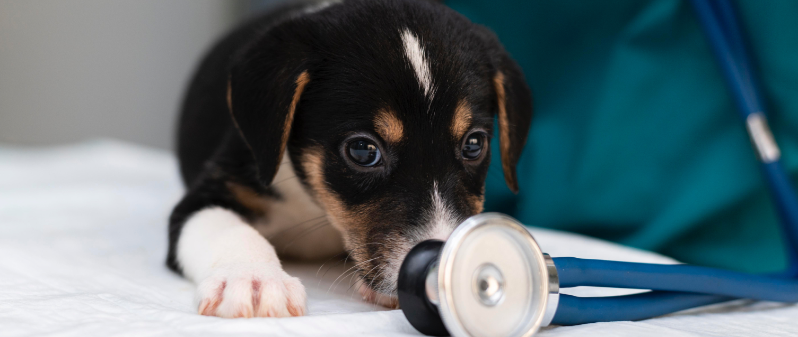
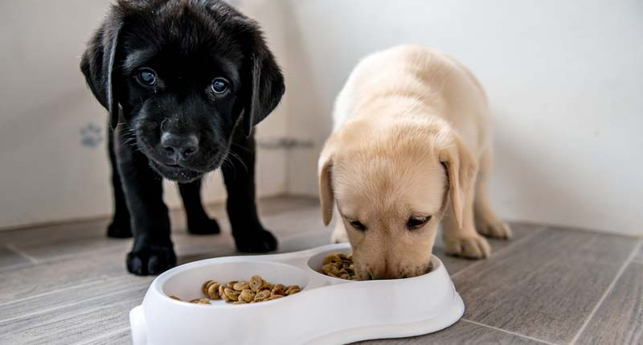

Sundhed
Fra hvalp til voksen. Sundhed er nøglen til et livslangt venskab.
Hundens sunde livsstil
Sundhed er en afgørende faktor for enhver hunds livskvalitet og trivsel. Ligegyldigt om det er en aktiv hvalp eller en aldrende veteran, er det vigtigt at prioritere sundheden hos vores firbenede venner. Fra ernæring og motion til regelmæssige veterintjek spiller flere faktorer en rolle i at opretholde en hunds optimale sundhedstilstand.
Veterinærpleje er også en vigtig del af at opretholde din hunds sundhed. Regelmæssige veterintjek og vaccinationsprogrammer er afgørende for at forebygge sygdomme og identificere sundhedsproblemer i tide. Din dyrlæge kan også give råd om forebyggende pleje, parasitkontrol og eventuelle specifikke sundhedsbehov, din hund måtte have baseret på dens alder, race og livsstil.
Vælg den rette kost
En af de vigtigste aspekter af sundhedspleje hos hunde er ernæring. At give din hund en afbalanceret kost, der opfylder dens ernæringsmæssige behov, er afgørende for dens overordnede sundhed og velvære. Det er vigtigt at vælge en hundefoder af høj kvalitet, der indeholder de nødvendige næringsstoffer, vitaminer og mineraler for at understøtte en sund vækst og udvikling samt styrke immunforsvaret.
Motion
Udover ernæring spiller motion en afgørende rolle i at holde din hund sund og i form. Regelmæssig motion bidrager til at forbrænde kalorier, opretholde en sund vægt, forbedre muskeltonen og fremme kardiovaskulær sundhed. Aktiviteter som gåture, løb, leg med legetøj og træningssessioner kan alle bidrage til at holde din hund mentalt og fysisk stimuleret.
Sunde tænder
Tandpleje er et ofte overset, men kritisk element af sundhedspleje hos hunde. Tandproblemer som plak, tandsten og tandkødsbetændelse kan føre til smerte, infektioner og endda alvorlige helbredsproblemer, hvis de ikke behandles. Regelmæssig tandbørstning derhjemme, tandrensninger hos dyrlægen og brugen af tandplejeprodukter kan alle hjælpe med at opretholde din hunds mundhygiejne.
Mental sundhed
Endelig spiller mental sundhed også en vigtig rolle i din hunds generelle trivsel. Socialisering, mental stimulation og positiv forstærkning kan alle bidrage til at opretholde en sund og glad sindstilstand hos din hund. At give din hund masser af kærlighed, opmærksomhed og muligheder for at interagere med andre hunde og mennesker kan bidrage til at forebygge adfærdsproblemer og fremme dens følelsesmæssige velbefindende.
I sidste ende er sundhed en holistisk tilgang, der kræver opmærksomhed på alle disse forskellige faktorer. Ved at give din hund en sund kost, tilstrækkelig motion, regelmæssig veterinærpleje, god tandhygiejne og positiv mental stimulation kan du hjælpe med at sikre, at den lever et langt, lykkeligt og sundt liv sammen med dig.